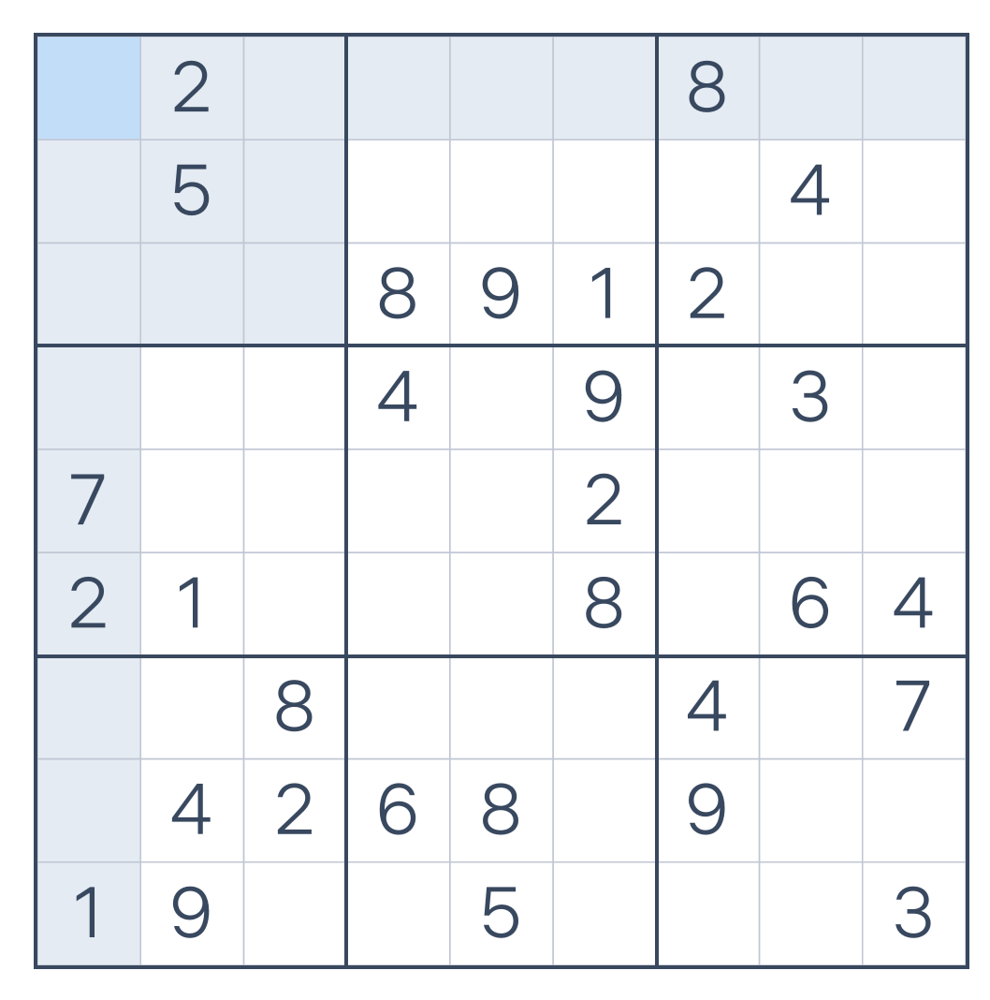

values <- c(8, 5, 3, 6, 4, 7) # value of each project
costs <- c(5, 3, 2, 4, 3, 5) # its cost
budget <- 11
projects <- paste0("P", seq_along(values))11 Mixed-Integer Programming
NoteWhat you’ll be able to do
Add integer or boolean decision variables to a model and solve the resulting mixed-integer linear program with HiGHS — no extra install. See a mixed-integer second-order-cone problem solved with SCIP, and learn which mixed-integer problems still need a commercial solver.
11.1 Discrete decisions
So far every variable was continuous. But many real decisions are discrete: select this project or not, how many units to ship, which facility to open. Encoding those as integer or boolean variables turns a convex problem into a mixed-integer one. These are no longer convex — they are combinatorial and NP-hard in general — but CVXR hands them to a solver that does branch-and-bound over a sequence of convex relaxations. You write the model the same way; you just declare some variables integer = TRUE or boolean = TRUE.
11.2 Hands-on: a 0/1 knapsack (MILP)
The classic discrete problem: choose a subset of items to maximize total value without exceeding a budget. With a linear objective and boolean variables this is a mixed-integer linear program (MILP) — squarely within HiGHS, one of CVXR’s built-in CRAN solvers.
pick <- Variable(length(values), boolean = TRUE) # 1 = select, 0 = skip
prob <- Problem(Maximize(sum(values * pick)),
list(sum(costs * pick) <= budget))
psolve(prob, solver = "HIGHS")[1] 17selected <- projects[value(pick) > 0.5]
cat("Selected:", paste(selected, collapse = ", "),
"\nTotal value:", sum(values[value(pick) > 0.5]),
" Total cost:", sum(costs[value(pick) > 0.5]), "/", budget, "\n")Selected: P1, P2, P5
Total value: 17 Total cost: 11 / 11 The boolean = TRUE is the whole story — it forces each pick to 0 or 1. Drop it and you would get the (fractional) LP relaxation, an upper bound that is often not achievable with whole items:
pick_lp <- Variable(length(values))
relax <- Problem(Maximize(sum(values * pick_lp)),
list(sum(costs * pick_lp) <= budget, pick_lp >= 0, pick_lp <= 1))
cat("LP relaxation value:", round(psolve(relax, solver = "HIGHS"), 3),
"(>= the integer optimum)\n")LP relaxation value: 17.5 (>= the integer optimum)round(value(pick_lp), 3) [,1]
[1,] 1.00
[2,] 1.00
[3,] 0.00
[4,] 0.75
[5,] 0.00
[6,] 0.00That gap between the relaxation and the integer optimum is exactly what branch-and-bound has to close.
11.3 Integer least squares, by reformulation (SCIP)
Here is a mixed-integer problem straight out of our regression chapters: integer least squares — find integer coefficients \(x\) minimizing \(\|Ax - b\|_2^2\). The obvious transcription stops us cold:
set.seed(0)
A <- matrix(runif(12 * 5), 12, 5); b <- rnorm(12)
x <- Variable(5, integer = TRUE)
psolve(Problem(Minimize(sum_squares(A %*% x - b))), solver = "SCIP")Error in `construct_solving_chain()`:
! Mixed-integer QP (MIQP) is not supported by the selected solver.
ℹ Try solver: GUROBI, XPRESS, CPLEX.The message points to commercial solvers — but that is a routing quirk, not a real limit. A quadratic objective with integers travels through CVXR’s QP path, where only GUROBI/CPLEX/XPRESS are registered. The cure is the skill from Chapter 3: reformulate. Minimizing \(\|Ax-b\|_2^2\) has the same minimizer as minimizing the norm \(\|Ax-b\|_2\), and a norm is a second-order cone — which makes this an MI-SOCP, exactly what SCIP handles:
t <- Variable()
prob <- Problem(Minimize(t), list(p_norm(A %*% x - b, 2) <= t)) # SOC epigraph
psolve(prob, solver = "SCIP")[1] 2.59044xhat <- value(x)
cat("integer x:", xhat, " sum of squares:", round(sum((A %*% xhat - b)^2), 4), "\n")integer x: -1 0 1 1 0 sum of squares: 6.7104 That is the same integer optimum a commercial MIQP solver returns — obtained on a CRAN solver simply by writing the objective in a form SCIP accepts. SOC plus integers is SCIP’s home turf; the second-order cone is doing the work the quadratic objective could not.
NoteTwo current limitations (both may change)
These reflect the state of the tooling today, not permanent rules — worth knowing now, but re-test rather than assume, since solvers and CVXR’s routing keep evolving.
- HiGHS with an SOC inside a mixed-integer problem. As of this writing, HiGHS does not support a second-order cone in a mixed-integer model, and rather than erroring it can silently return a wrong
infeasible— so for now, send SOC + integers to SCIP. HiGHS is under active development, so this is the likelier of the two to change; check before relying on it. - MIQP routing. A quadratic objective with integers currently travels through CVXR’s QP path, where only commercial solvers are registered. On CRAN today, reformulate the quadratic as an SOC (above) and use SCIP — same answer. (Commercial solvers take the squared form directly.) This routing is a CVXR implementation choice that could also change.
11.4 Exercise
Exercise. Add a rule to the knapsack: projects P1 and P2 are mutually exclusive (at most one may be chosen). Re-solve and see what changes.
TipSolution
A “select at most one” rule is the linear constraint pick[1] + pick[2] <= 1:
prob2 <- Problem(Maximize(sum(values * pick)),
list(sum(costs * pick) <= budget,
pick[1] + pick[2] <= 1))
psolve(prob2, solver = "HIGHS")[1] 17projects[value(pick) > 0.5][1] "P1" "P3" "P4"Logical rules like mutual exclusion, prerequisites (pick[a] <= pick[b]), or “pick exactly k” are all just linear constraints on 0/1 variables.
11.5 Bonus: solving Sudoku
Sudoku is a pure feasibility integer program — there is nothing to optimize, only constraints to satisfy. It is a lovely illustration of how “exactly one of these” rules become linear equations on boolean variables.

0.We store the grid as a \(9\times 9\) matrix, using 0 for a blank cell:
puzzle <- matrix(c(
0,2,0, 0,0,0, 8,0,0,
0,5,0, 0,0,0, 0,4,0,
0,0,0, 8,9,1, 2,0,0,
0,0,0, 4,0,9, 0,3,0,
7,0,0, 0,0,2, 0,0,0,
2,1,0, 0,0,8, 0,6,4,
0,0,8, 0,0,0, 4,0,7,
0,4,2, 6,8,0, 9,0,0,
1,9,0, 0,5,0, 0,0,3), nrow = 9, byrow = TRUE)11.5.1 The formulation
The trick is to replace each cell’s digit with nine yes/no decisions. Define a boolean variable for every (cell, digit) pair:
\[ x_{ijk} = \begin{cases} 1 & \text{if cell } (i,j) \text{ holds digit } k,\\ 0 & \text{otherwise,}\end{cases} \qquad i,j,k \in \{1,\dots,9\}. \]
That is \(9\times 9\times 9 = 729\) booleans. Every Sudoku rule is now an “exactly one” count — a sum of these booleans set equal to 1:
\[ \begin{array}{lll} \textstyle\sum_{k} x_{ijk} = 1 & \forall\, i,j & \text{(each cell holds exactly one digit)}\\[2pt] \textstyle\sum_{j} x_{ijk} = 1 & \forall\, i,k & \text{(digit } k \text{ appears once in each row } i)\\[2pt] \textstyle\sum_{i} x_{ijk} = 1 & \forall\, j,k & \text{(digit } k \text{ appears once in each column } j)\\[2pt] \textstyle\sum_{(i,j)\in B} x_{ijk} = 1 & \forall\, \text{box } B,\ k & \text{(digit } k \text{ appears once in each } 3\times3 \text{ box)}\\[2pt] x_{ij g_{ij}} = 1 & \text{for each clue } g_{ij} & \text{(given numbers are fixed)} \end{array} \]
There is no objective — any grid satisfying all of these is the answer, so we minimize the constant 0 and let the solver find a feasible point.
11.5.2 In CVXR
We hold the booleans as a list of nine \(9\times 9\) matrices, X[[k]] being the indicator that each cell equals digit k. Each block of constraints below mirrors one line of the formulation. (Recall CVXR’s 1-based axes from earlier: axis = 1 sums each row, axis = 2 sums each column.)
X <- lapply(1:9, function(k) Variable(c(9, 9), boolean = TRUE))
cons <- list(Reduce(`+`, X) == matrix(1, 9, 9)) # one digit per cell
for (k in 1:9) {
cons <- c(cons,
list(sum_entries(X[[k]], axis = 1) == 1, # digit k once per row
sum_entries(X[[k]], axis = 2) == 1)) # digit k once per column
for (br in 0:2) for (bc in 0:2) { # digit k once per 3x3 box
rows <- (3 * br + 1):(3 * br + 3)
cols <- (3 * bc + 1):(3 * bc + 3)
cons <- c(cons, list(sum_entries(X[[k]][rows, cols]) == 1))
}
}
for (i in 1:9) for (j in 1:9) if (puzzle[i, j] != 0) # fix the clues
cons <- c(cons, list(X[[puzzle[i, j]]][i, j] == 1))Solve it as a feasibility problem and read the chosen digit in each cell:
psolve(Problem(Minimize(0), cons), solver = "HIGHS")[1] 0solution <- matrix(0, 9, 9)
for (k in 1:9) solution[round(value(X[[k]])) == 1] <- k
solution [,1] [,2] [,3] [,4] [,5] [,6] [,7] [,8] [,9]
[1,] 9 2 6 3 4 5 8 7 1
[2,] 8 5 1 7 2 6 3 4 9
[3,] 4 7 3 8 9 1 2 5 6
[4,] 6 8 5 4 7 9 1 3 2
[5,] 7 3 4 1 6 2 5 9 8
[6,] 2 1 9 5 3 8 7 6 4
[7,] 5 6 8 9 1 3 4 2 7
[8,] 3 4 2 6 8 7 9 1 5
[9,] 1 9 7 2 5 4 6 8 3A few hundred boolean variables, a couple hundred linear constraints, and HiGHS fills the grid in well under a second — with no Sudoku-specific algorithm, just the rules written as constraints. (Swap in any puzzle by editing the 0-padded matrix.)
11.6 Takeaways
- Declaring a variable
integer = TRUEorboolean = TRUEturns a model into a mixed-integer program — same modeling, combinatorial solving. - MILP (linear objective) runs on HiGHS, built in and install-free.
- MI-SOCP (a cone plus integers) runs on SCIP. An integer problem with a quadratic objective (MIQP) goes to a commercial solver through CVXR’s QP path — but reformulate the quadratic as an SOC and SCIP solves it on CRAN, same answer.
- Match the solver to the problem — today a pure-MILP solver like HiGHS can’t handle an SOC (and may not tell you), so send those to SCIP for now.
- Some integer problems have no objective at all: logical puzzles like Sudoku are pure feasibility programs, where every rule is an “exactly one” sum of booleans.
See Mixed-Integer QP and Integer Programming.